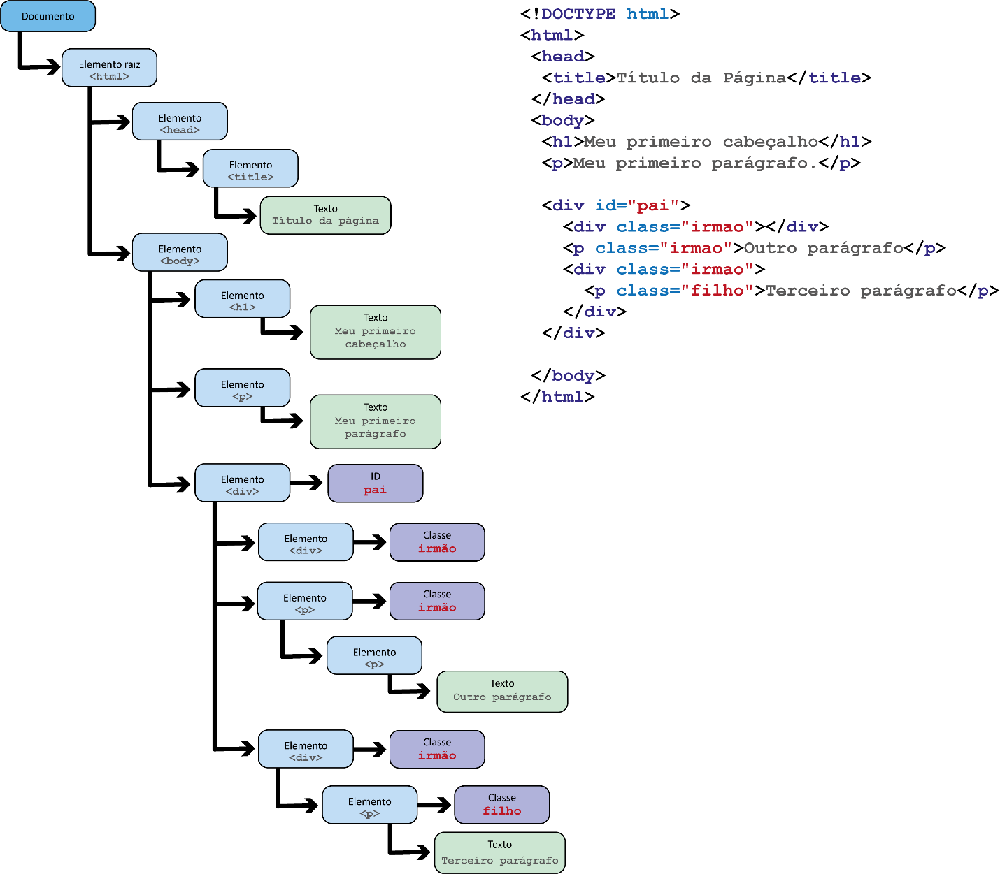

O HTML (Hypertext Markup Language ou Linguagem de Marcação de Hiper Texto) surgiu em função da necessidade de criar artigos que pudessem ser visualizados atravé de um computador, sendo o HTML a linguagem de marcação que estrutura o artigo e que também referencia outros artigos através de links já que esse era o principal propósito dessa linguagem, já que o inventor Tim Berners Lee tinha por objetivo criar esses artigos e disponibilizar online e que também esses artigos pudessem conter links que referenciassem citações para o artigo original
O HTTP (Hypertext Transfer Protocol ou Protocolo de Tranferência de Hiper Texto) foi criado para que fosse possível criar um canal de comunicação padronizado através das redes que conectam os computadores, dessa maneira foi criado o HTTP para convencionar como a transferência dos arquivos HTML iria acontecer através das redes para que os computadores pudessem reconhecer esse padrão.
O Browser ou Navegador foi criado para que o usuário tivesse uma plataforma para acessar esses artigos que hoje conhecemos por websites que são formados por webpages. Os navegadores são capazes de interpretar a Linguagem de Marcação (HTML) e estruturar o site com essas informações que foram interpretadas. Nos dias de hoje os navegadores também interpretam outras linguagens como o CSS (Cascade Style Sheet ou Folhas de Estilo em Cascata) que são responsáveis por dar estilo as páginas através de fontes de letras diferentes, cores, tipos de fonte, tamanho, posicionamento na página entre outras funções e os Navegadores também interpretam a linguagem Javascript que é reponsável por dar função aos elementos da página, exibir animações entre outras funcionalidades.
A maioria das tags HTML possuem tags de abertura e de fechamento, porém também existem algumas tags que não possuem tag de fechamento
As tags também possuem atributos onde podemos editar estilo, utilizar identificadores de classe e id e também informações e funções
A !DOCTYPE HTML indica que esta página é um documento HTML e deve ser interpretada desta maneira pelo navegador
A tag HTML delimita o inicio e o fim do documento HTML
A tag title atribui um titulo para o site e é exibida na aba de navegação sendo muito importante para a semantica do site
A configuração meta chasert identifica em qual linguagem o navegador deverá interpretar a página
A tag 'head' é onde ficam as tags title, meta charset, links externos de referencia a documentos css e javascript, além de outras configurações
A tag 'body' é onde ficam as tags que formam a estrutura e o conteúdo do site que será exibido no navegador
A tag 'p' é utilizada para criar parágrafos
A tag 'header' é utilizada para identificar a sessão onde ficará o cabeçalho do site
A tag 'footer' é utilizada para identificar a sessão onde ficará o rodapé do site
A tag 'nav' é utilizada para identificar o menu do site
A tag 'span' é utilizada para editar ou estilizar uma parta especifica de um parágrafo ou de um título
A tag 'section' é utilizada para identificar uma sessão do site
A tag 'div' é utilizada para identifiar uma divisão do site, que seriam subdivisoes de uma sessão
A tag 'u' significa underline e é utilizada para sublinhar o texto
A tag "b" significa bold e é reconhecida pelo navegador como uma marcação de Negrito que deixa o texto mais destacado
A tag "strong" significa forte e é reconhecida pelo navegador como uma marcação de Negrito também, mas também é reconhecida pelo leitor para cegos e dá mais entonação na sua fala
A tag "i" significa itálico e é reconhecida pelo navegador como uma marcação de Itálico que realça o texto com uma caligrafia estilizada
A tag "em" significa Emphasis (ênfase) é reconhecida pelo navegador como uma marcação de Itálico que realça o texto com um caligrafia estilizada e também é reconhecida pelo leitor para cegos e dá mais enfase na sua fala
A tag "q" significa quotes (citação) e é reconhecida pelo navegador como aspas duplas que demarcam a citação de um autor que se deseja referenciar
A tag 'ul' é utilizada para apresentar uma lista não ordenada e a tag 'ol' é utilizada para apresentar uma lista ordenada, e a tag 'li' são os itens da lista seguem os exemplos abaixo
Lista não ordenada:
Lista ordenada:
A tag 'img' é utilizada para adicionar imagens ao documento html, e os atributos 'src' que indica o local da imagem e o atributo 'alt' que adiciona uma descrição da foto para que o leitor de tela possa fazer a leitura para deficientes visuais são obrigatórios
A tag 'video' é utilizada para adicionar um video a página HTML, sendo o atributo 'src' que indica o local do arquivo de video sendo ele local ou em um servidor na web obrigatório.
A tag 'iframe' é utilizada para adicionar videos do youtube a página HTML sendo possível incorporar o código do vídeo na página
Importante comentar que existem elementos que são do tipo Block que ocupam a linha inteira do elemento pai, e também tem os elementos do tipo Inline que ocupam somente a parte destinada ao seu espaço e dividem a linha com outros elementos. Confira abaixo:
Tags Block e InlineImportante mostrar a estrutura hierárquica de uma página HTML, para poder entender como funciona e poder fazer a construção ou manutenção da página de forma correta sem quebrar a estrutura da página. Confira a imagem abaixo:
DOM: Document Object Model é uma representação da página HTML no navegador que pode ser modificada no tempo de execucação, podemos acessar o DOM através da tecla de atalho F12
GetElementById: é utilizado para buscar um elemento HTML pelo seu identificador ID e após localizar é possível realizar alterações neste elemento em tempo de execução conforme vimos anteriormente na explicação do DOM
GetElementsByClassName: é utilizado para buscar um ou mais elementos pelo seu identificador de Classe e após localizar estes elementos é possível realizar alterações em tempo de execução.
GetElementsByTagName: é utilizado para buscar um ou mais elementos pelo seu identificador de Tag e após localizar estes elementos é possível realizar alterações em tempo de execução.